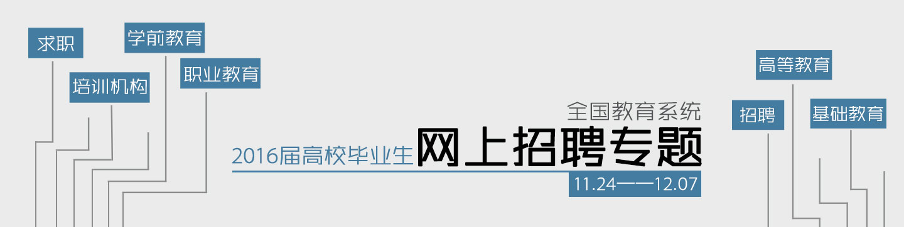

| 毕业去向 | 签约单位名称 | xxx | 单位组织机构代码 | 单位所在地 | |||
| 单位性质 | 单位行业 | xxx | 单位隶属部门 | 工作职位类别 | |||
| 报道证签发类别 | 报到证迁往单位名称 | xxx | 报到证迁往单位算在地 | 档案转寄单位名称 | |||
| 档案转寄单位地址 | 档案转寄单位邮编 | xxx | 是否接受户口 | 是否接受档案 | |||
| 户口签转地 | 档案接收部门 | xxx | 档案接收联系人 | 档案接收联系人电话 | |||
| 单位联系人 | 联系人电话 | xxx | 联系人手机号码 | 联系人电子邮箱 | |||
| 联系人传真 | 单位地址 | xxx | 单位邮编 | 备注 |
| 级别 | 审核结果 | 理由 | 时间 |
| 学院 | 未审核 | ||
| 副书记 | 未审核 | ||
| 学校 | 未审核 |
材料展示
- 吃的呢吃的呢吃的呢吃的呢
-  吃的呢吃的呢吃的呢吃的呢
- 吃的呢吃的呢吃的呢吃的呢